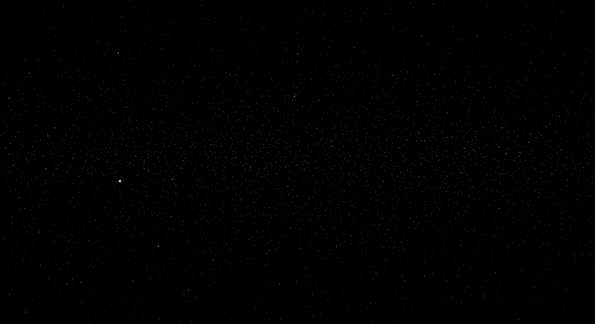

.png)
Desenvolvedor Full Stack apaixonado por transformar ideias em realidade através de soluções tecnológicas inovadoras. Possuo expertise em Front-end, Back-end e Banco de Dados, com experiência na criação de softwares, análise de dados e desenvolvimento de interfaces visuais. Busco uma oportunidade para aplicar minhas habilidades e contribuir para o sucesso de projetos desafiadores, impulsionando o crescimento da empresa.
Chat interativo, feed infinito, cadastro de usuários, apresentação de sistema.
(Em Manutenção)
Projeto de cardápio digital utilizando HTML, CSS e JavaScript para uma experiência interativa.
(Acesso Bloqueado)
Ambiente completo para postar, salvar, criar playlists e escutar músicas.
(Em Manutenção)
Aplicação web para vendas de projeção visual, com catálogo de produtos e sistema de pagamento integrado.
Visitar ProjetoPlataforma de quiz interativo para testar conhecimentos em diversas áreas. Desenvolvido com HTML, CSS e JavaScript.
Visitar ProjetoAplicativo móvel simples para organização de tarefas diárias, com persistência de dados e notificações. Desenvolvido com React Native.
Visitar ProjetoUm ambiente com 4 agentes conversacionais generativos para uso do dia a dia.
Visitar ProjetoUma coleção de jogos desenvolvidos para entretenimento e demonstração de habilidades.
(Em Manutenção)
